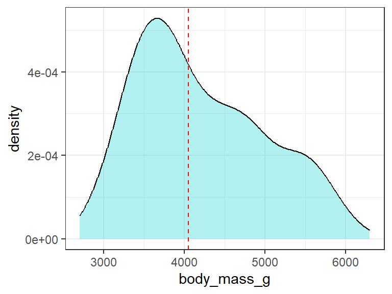

Machine Learning (ML) using Regression Algorithm in R
Introduction
In the previous post we saw how classification algorithm may be applied in machine learning (ML). In this post we are going to look the application of regression algorithm in machine learning. We will use penguins data from the palmerpenguins package (Horst, Hill, and Gorman 2020). It includes measurements for penguin species, island in Palmer Archipelago, size (flipper length, body mass, bill dimensions), and sex.
First, we will load the packages which we are going to use in this post; I will use require() function, but you may also use library() function depending on your preferences. The tidyverse is a collection of R packages that are designed to work together to make data manipulation and analysis easier and more efficient. Tidyverse is used as a workflow from data preprocessing to model fitting and evaluation. The packages in the Tidyverse, such as dplyr and ggplot2, will be used in data manipulation and plotting of graphs respectively.
Tidymodels, on the other hand, is a collection of R packages for modeling and machine learning tasks. Tidymodels includes packages such as rsample for the initial splitting and training of the data, parsnip for specifying and fitting models, and yardstick for evaluating model performance. The ranger package will be used in setting the engine in random forest model.
The data used will come from palmerpenguins package.
Data loading and preprocessing
After loading the packages, load the penguins data (Horst, Hill, and Gorman 2020) and remove all the missing values in the dataset. Name the dataset as penguin.data. The dataset consist of 333 rows and 8 columns
# A tibble: 333 × 8
species island bill_length_mm bill_depth_mm flipper_length_mm body_mass_g
<fct> <fct> <dbl> <dbl> <int> <int>
1 Adelie Torgersen 39.1 18.7 181 3750
2 Adelie Torgersen 39.5 17.4 186 3800
3 Adelie Torgersen 40.3 18 195 3250
4 Adelie Torgersen 36.7 19.3 193 3450
5 Adelie Torgersen 39.3 20.6 190 3650
6 Adelie Torgersen 38.9 17.8 181 3625
7 Adelie Torgersen 39.2 19.6 195 4675
8 Adelie Torgersen 41.1 17.6 182 3200
9 Adelie Torgersen 38.6 21.2 191 3800
10 Adelie Torgersen 34.6 21.1 198 4400
# ℹ 323 more rows
# ℹ 2 more variables: sex <fct>, year <int>Then, observe the internal structure of the dataset using glimpse() function of dplyr package. The dataset consist of 8 variables (columns); 3 are factors data (species, island and sex), 2 numeric or double data (bill_length_mm, bill_depth_mm) and 3 integers (flipper_length_mm, body_mass_g, year).
Rows: 333
Columns: 8
$ species <fct> Adelie, Adelie, Adelie, Adelie, Adelie, Adelie, Adel…
$ island <fct> Torgersen, Torgersen, Torgersen, Torgersen, Torgerse…
$ bill_length_mm <dbl> 39.1, 39.5, 40.3, 36.7, 39.3, 38.9, 39.2, 41.1, 38.6…
$ bill_depth_mm <dbl> 18.7, 17.4, 18.0, 19.3, 20.6, 17.8, 19.6, 17.6, 21.2…
$ flipper_length_mm <int> 181, 186, 195, 193, 190, 181, 195, 182, 191, 198, 18…
$ body_mass_g <int> 3750, 3800, 3250, 3450, 3650, 3625, 4675, 3200, 3800…
$ sex <fct> male, female, female, female, male, female, male, fe…
$ year <int> 2007, 2007, 2007, 2007, 2007, 2007, 2007, 2007, 2007…In this post we will use four variables from penguins data; which are bill_length_mm, bill_depth_mm, flipper_length_mm and body_mass_g. Use the select() function of dplyr package (Wickham et al. 2022) to select the variables of interest.
penguin.data = penguin.data %>%
select(flipper_length_mm,
bill_length_mm,
bill_depth_mm,
body_mass_g)
penguin.data# A tibble: 333 × 4
flipper_length_mm bill_length_mm bill_depth_mm body_mass_g
<int> <dbl> <dbl> <int>
1 181 39.1 18.7 3750
2 186 39.5 17.4 3800
3 195 40.3 18 3250
4 193 36.7 19.3 3450
5 190 39.3 20.6 3650
6 181 38.9 17.8 3625
7 195 39.2 19.6 4675
8 182 41.1 17.6 3200
9 191 38.6 21.2 3800
10 198 34.6 21.1 4400
# ℹ 323 more rowsBefore we apply ML regression algorithms, first we will look on the distribution of the response variable (body_mass_g). Our response variable ranges from around 2700 to 6700 grams with the median value at around 4050 grams Figure 1.
penguin.data %>%
mutate(med.mass = median(body_mass_g, na.rm = T)) %>% #median value = 4050
ggplot(aes(x = body_mass_g))+
geom_density(fill = "cyan3", alpha = 0.3)+
geom_vline(xintercept = 4050, color = "red", linetype = "dashed")+
theme_bw()
Data Spliting
Regression algorithm as one of the supervised learning, needs two data types; the training and testing data set. The penguin.data will be split into two groups; training and testing dataset. The training dataset will have a proportion of 70% and the testing data will carry 30% of the total data. In total, our dataset has 333 observations in which 233 samples will be used to train the model while in validation of the accuracy of the model, we will use the testing set with 100 samples.
<Training/Testing/Total>
<233/100/333>The training data below with 233 samples will be used to training the model;
# A tibble: 233 × 4
flipper_length_mm bill_length_mm bill_depth_mm body_mass_g
<int> <dbl> <dbl> <int>
1 230 59.6 17 6050
2 184 34.4 18.4 3325
3 215 45.2 15.8 5300
4 210 49 19.5 3950
5 202 41.4 18.5 3875
6 203 51 18.8 4100
7 212 44.9 13.8 4750
8 225 51.1 16.5 5250
9 210 50.8 19 4100
10 211 45.4 14.6 4800
# ℹ 223 more rowsThe testing data with 100 observations will be used to test the accuracy of the model
# A tibble: 100 × 4
flipper_length_mm bill_length_mm bill_depth_mm body_mass_g
<int> <dbl> <dbl> <int>
1 186 39.5 17.4 3800
2 195 40.3 18 3250
3 195 38.7 19 3450
4 194 46 21.5 4200
5 189 35.9 19.2 3800
6 185 38.2 18.1 3950
7 188 39.5 17.8 3300
8 186 36 18.5 3100
9 191 42.3 21.2 4150
10 186 39.6 17.7 3500
# ℹ 90 more rowsModel specification
In order to perform the predictions on the body weight of the penguin species, we will use two different regression model types; The Random Forest and the Linear Regression model. The regression algorithm is applied when the response variable is numeric. We will look at one model after another and then at the end we will compare the best model among the two.
Random forest model
First, we will specify the model type as random forest using the rand_forest() function of the parsnip package (Kuhn and Vaughan 2022). The set engine ranger and the mode regression will be used.
Finally, the model will be fitted with the train data set using the fit() function of the parsnip package (Kuhn and Vaughan 2022) with the response variable as body_mass_g.
mod.rf = rand_forest() %>%
set_engine(engine = "ranger") %>%
set_mode(mode = "regression") %>%
fit(body_mass_g~., data = train.set)
mod.rfparsnip model object
Ranger result
Call:
ranger::ranger(x = maybe_data_frame(x), y = y, num.threads = 1, verbose = FALSE, seed = sample.int(10^5, 1))
Type: Regression
Number of trees: 500
Sample size: 233
Number of independent variables: 3
Mtry: 1
Target node size: 5
Variable importance mode: none
Splitrule: variance
OOB prediction error (MSE): 119311.9
R squared (OOB): 0.8177082 The summary of the fitted model shows the R-squared value is 0.80. This shows that 80% of our data fits better to the model.
Model Validation
Then, we will evaluate the model’s performance on the testing data using the predict() function of stats package (R Core Team 2022). The model have achieved predictions of body weight of the penguins using the test data set which was not used in data training. The values of the predictions are within the distribution ranges of the response variable.
# A tibble: 100 × 5
.pred flipper_length_mm bill_length_mm bill_depth_mm body_mass_g
<dbl> <int> <dbl> <dbl> <int>
1 3583. 186 39.5 17.4 3800
2 3833. 195 40.3 18 3250
3 3931. 195 38.7 19 3450
4 3980. 194 46 21.5 4200
5 3709. 189 35.9 19.2 3800
6 3693. 185 38.2 18.1 3950
7 3587. 188 39.5 17.8 3300
8 3509. 186 36 18.5 3100
9 4040. 191 42.3 21.2 4150
10 3595. 186 39.6 17.7 3500
# ℹ 90 more rowsAccuracy testing
After validating the model performance, then we need to test its accuracy using the metrics() function of yardstick package (Kuhn, Vaughan, and Hvitfeldt 2022). The data used will be the output of the trained model (pred.rf), the truth variable will be the actual values of the body mass and the estimate variable will be the the predicted values of the body mass.
# A tibble: 3 × 3
.metric .estimator .estimate
<chr> <chr> <dbl>
1 rmse standard 343.
2 rsq standard 0.815
3 mae standard 279. The accuracy result shows the R-squared value of 0.81 meaning that our model is accurate for more than 80%. Other performance indicators like Root Mean Squared Error (RMSE) and the Mean Absolute Error (MAE) are also low. The RMSE measures the average difference between values predicted by a model and the actual values while the MAE measures the average absolute error between actual and predicted values.
Model predictions on the new data
Finally, we will use the tuned model to make predictions on new data. First we will create the new dataset using the rnorm() function of R software (R Core Team 2022). We will name our new data as data.new.
data.new = tibble(bill_depth_mm = rnorm(n = 10,
mean = 15,
sd = 3),
bill_length_mm = rnorm(n = 10,
mean = 50,
sd = 10),
flipper_length_mm = rnorm(n = 10,
mean = 195,
sd = 50))
mod.rf %>%
predict(data.new) %>%
bind_cols(data.new) %>%
mutate(.pred = as.integer(.pred))# A tibble: 10 × 4
.pred bill_depth_mm bill_length_mm flipper_length_mm
<int> <dbl> <dbl> <dbl>
1 5417 14.0 57.9 263.
2 3305 14.1 29.0 166.
3 4022 15.9 49.6 155.
4 3818 20.5 46.0 168.
5 5266 12.1 48.9 235.
6 4179 21.6 68.0 160.
7 3743 14.4 41.9 131.
8 5599 17.9 69.0 314.
9 4192 12.4 57.1 140.
10 4745 13.5 57.4 205.That’s great!!
Our model has predicts the body mass for the penguin species for the new data.
Linear regression model
When using the linear regression model we will first specify the model type as Linear Regression using the linear_reg() function of the parsnip package (Kuhn and Vaughan 2022). The set engine lm and the mode regression will be used.
Finally, the model will be fitted with the train data set using the fit() function of the parsnip package (Kuhn and Vaughan 2022) with the response variable as body_mass_g.
mod.lm = linear_reg() %>%
set_engine(engine = "lm") %>%
set_mode(mode = "regression") %>%
fit(body_mass_g~., data = train.set %>% select(-flipper_length_mm))
mod.lmparsnip model object
Call:
stats::lm(formula = body_mass_g ~ ., data = data)
Coefficients:
(Intercept) bill_length_mm bill_depth_mm
2704.67 82.83 -123.51 Model Validation
Then, we will evaluate the model’s performance on the testing data using the predict() function of stats package (R Core Team 2022). Our model has predicted for the body weight values of the penguins.
# A tibble: 100 × 5
.pred flipper_length_mm bill_length_mm bill_depth_mm body_mass_g
<dbl> <int> <dbl> <dbl> <int>
1 3827. 186 39.5 17.4 3800
2 3819. 195 40.3 18 3250
3 3563. 195 38.7 19 3450
4 3859. 194 46 21.5 4200
5 3307. 189 35.9 19.2 3800
6 3633. 185 38.2 18.1 3950
7 3778. 188 39.5 17.8 3300
8 3401. 186 36 18.5 3100
9 3590. 191 42.3 21.2 4150
10 3798. 186 39.6 17.7 3500
# ℹ 90 more rowsAccuracy testing
The model accuracy will be tested using the metrics() function of yardstick package (Kuhn, Vaughan, and Hvitfeldt 2022).
# A tibble: 3 × 3
.metric .estimator .estimate
<chr> <chr> <dbl>
1 rmse standard 616.
2 rsq standard 0.411
3 mae standard 506. The accuracy result shows the R-square is 0.41, RMSE is 616.14 and the MAE value is 505.88.
Comparison between the two models
We have seen the performance of each model. We have to choose which model is more accurate and performs better than the other. I will join the two accuracy test results; the one from the random forest and the other from the linear regression model (Table 1).
pred.rf %>%
metrics(truth = body_mass_g,
estimate = .pred) %>%
pivot_wider(names_from = .metric,
values_from = .estimate) %>%
mutate(model = "Random Forest") %>%
select(Model = 5, Rsquare=3, RMSE=2, MAE=4) %>%
bind_rows(
pred.lm %>%
metrics(truth = body_mass_g,
estimate = .pred) %>%
pivot_wider(names_from = .metric,
values_from = .estimate) %>%
mutate(model = "Linear Regression") %>%
select(Model = 5, Rsquare=3, RMSE=2, MAE=4)
) %>%
mutate(across(is.numeric, round, 2)) %>%
gt::gt()Warning: There were 2 warnings in `mutate()`.
The first warning was:
ℹ In argument: `across(is.numeric, round, 2)`.
Caused by warning:
! Use of bare predicate functions was deprecated in tidyselect 1.1.0.
ℹ Please use wrap predicates in `where()` instead.
# Was:
data %>% select(is.numeric)
# Now:
data %>% select(where(is.numeric))
ℹ Run `dplyr::last_dplyr_warnings()` to see the 1 remaining warning.| Model | Rsquare | RMSE | MAE |
|---|---|---|---|
| Random Forest | 0.81 | 343.03 | 279.11 |
| Linear Regression | 0.41 | 616.14 | 505.88 |
The table shows that the Random Forest is the best than the Linear Regression Model!! This is because it has higher R-squared value with low RMSE and MAE values (Table 1).
Summary
All in all, the success of machine learning and artificial intelligence depend on the quality of the data, the complexity of the problem, and the choice of the appropriate algorithms and techniques (Jiawei Han and Pei 2011; Witten et al. 2005).
The quality of the data is one of the most important factors for the success of machine learning. The data should be accurate, complete, and representative of the problem domain (Jiawei Han and Pei 2011; Witten et al. 2005). In addition, the data should be properly labeled and preprocessed to ensure that the machine learning algorithms can effectively learn from it.
The complexity of the problem is also a key factor in determining the success of machine learning (Gomez-Cabrero et al. 2014). Some problems are inherently more complex than others, and require more sophisticated algorithms and techniques to solve. For example, image recognition and natural language processing are typically more complex than simple regression problems.
Finally, the choice of the appropriate algorithms and techniques is critical for the success of machine learning (Sarker 2021; Gomez-Cabrero et al. 2014). Different algorithms and techniques are suited for different types of problems, and the choice of the appropriate one will depend on the specific problem and the available data. Additionally, the parameters and hyperparameters of the algorithms need to be properly tuned to ensure that the models are optimized for the problem at hand.
Don’t miss out our next post in this blog!!!